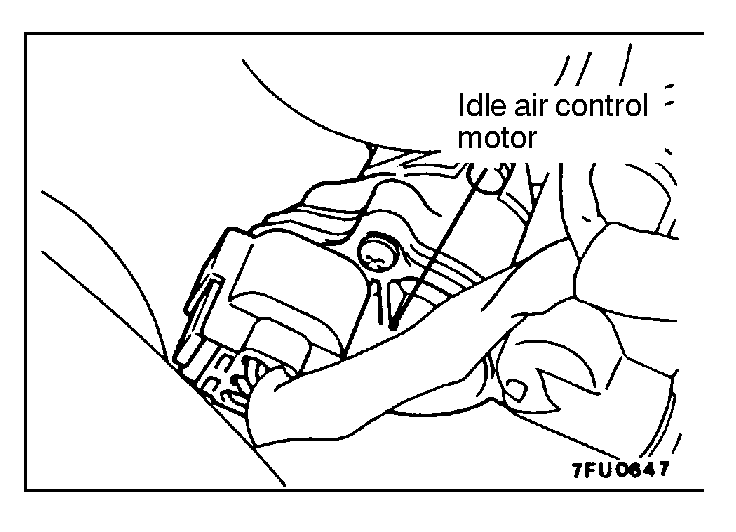
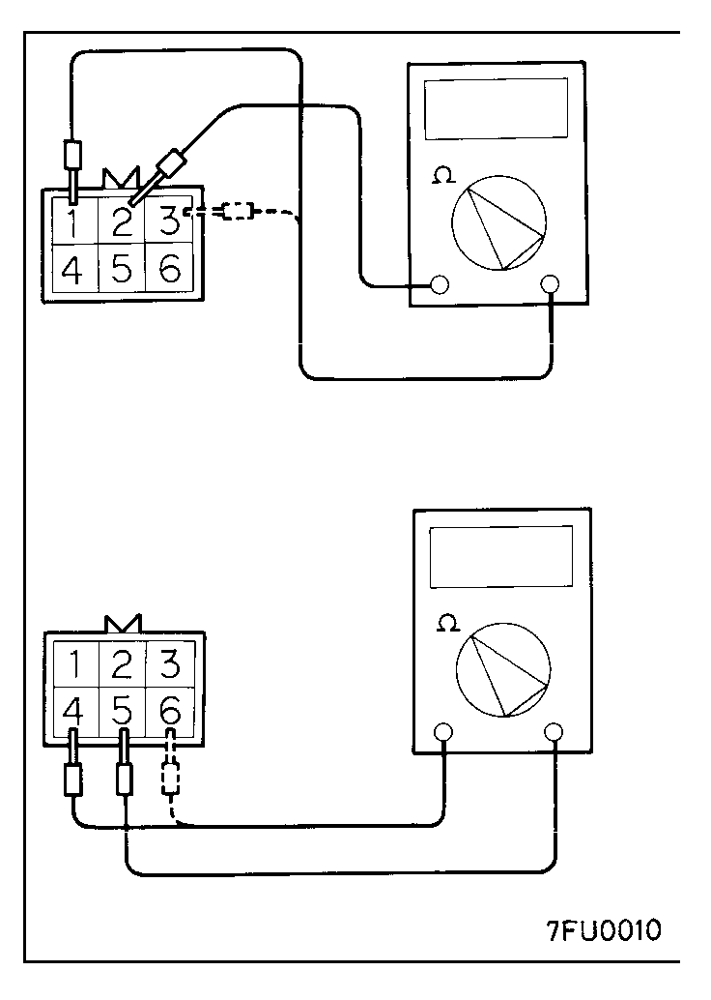
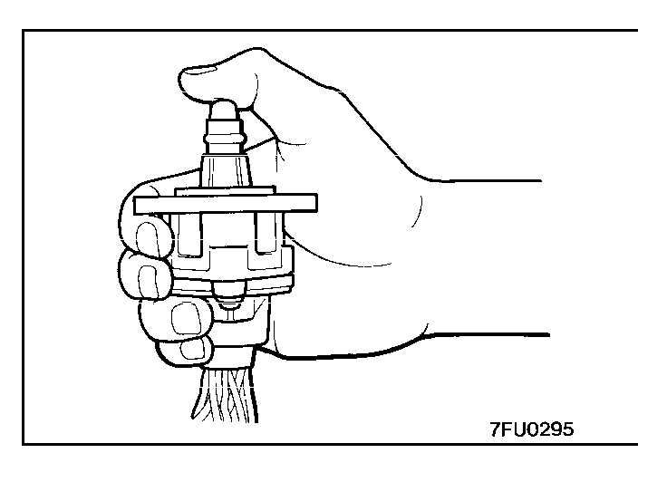
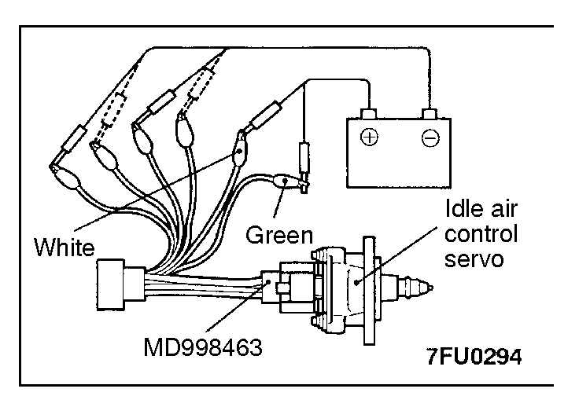

![[Previous]](https://mitsubishitechinfo.com/data/F24S/BUTTONS/fprevg.png)
![[Next]](https://mitsubishitechinfo.com/data/F24S/BUTTONS/fnextg.png)
   
IDLE AIR CONTROL MOTOR (STEPPER MOTOR) CHECK <2.0L Engine (Turbo)>
Checking the Operation Sound
1.Check to be sure that the engine coolant temperature is 20°C ( 68°F) or below.
NOTE
Disconnecting the engine coolant temperature sensor connector and connecting the harness-side of the connector to another engine coolant temperature sensor that is at 20°C (68°F) or below is also okay.
2.Check that the operation sound of the stepper motor can be heard after the ignition is switched ON (but without starting the motor), then OFF.
3.If the operation sound cannot be heard, check the stepper motor's activation circuit.
If the circuit is normal, it is probable that there is a malfunction of the stepper motor or of the engine control module.
Checking the Coil Resistance
1.Disconnect the idle air control motor connector and connect the special tool (test harness).
2.Measure the resistance between terminal 2 (white clip of the special tool) and either terminal 1 (red clip) or terminal 3 (blue clip) of the connector at the idle air control motor side.
Standard value: 28 - 33 Ω [at 20°C (68°F)]
3.Measure the resistance between terminal 5 (green clip of the special tool) and either terminal 6 (yellow clip) or terminal 4 (black clip) of the connector at the idle air control motor side.
Standard value: 28 - 33 Ω [at 20°C (68°F)]
Operational Check
1.Remove the throttle body.
2.Remove the stepper motor.
3.Connect the special tool (test harness) to the idle air control motor connector.
4.Connect the positive (+) terminal of a power supply (approx. 6V) to the white clip and the green clip.
5.With the idle air control motor as shown in the illustration, connect the negative (-) terminal of the power supply to each clip as described in the following steps, and check whether or not a vibrating feeling (a feeling of very slight vibration of the stepper motor) is generated as a result of the activation of the stepper motor.
(1)Connect the negative (-) terminal of the power supply to the red and black clip.
(2)Connect the negative (-) terminal of the power supply to the blue and black clip.
(3)Connect the negative (-) terminal of the power supply to the blue and yellow clip.
(4)Connect the negative (-) terminal of the power supply to the red and yellow clip.
(5)Connect the negative (-) terminal of the power supply to the red and black clip.
(6)Repeat the tests in sequence from (5) to (1).
6.If, as a result of these tests, vibration is detected, the stepper motor can be considered to be normal.